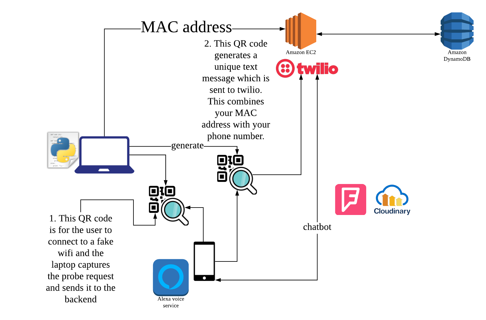
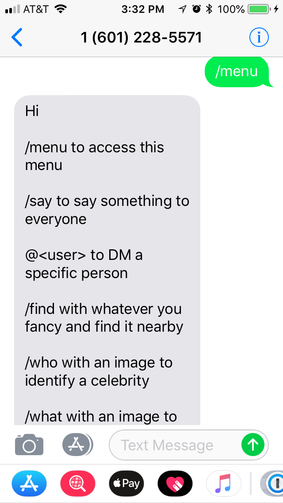
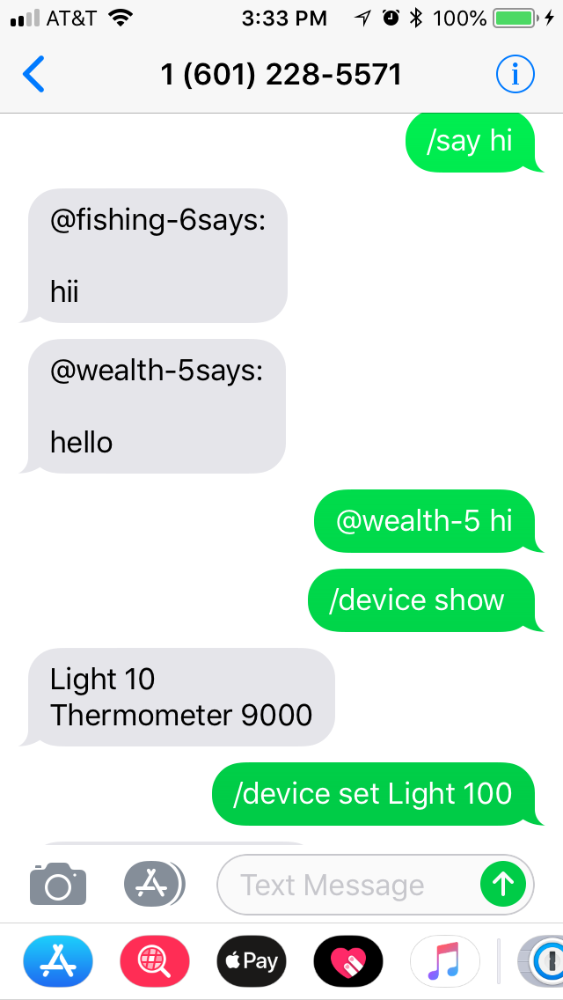
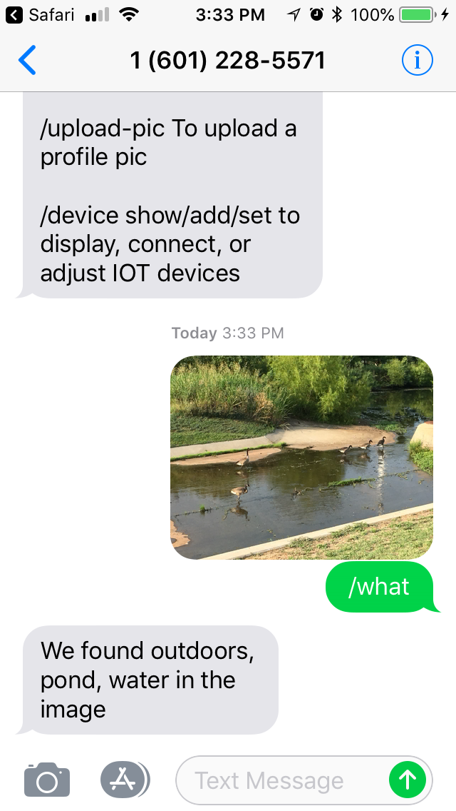
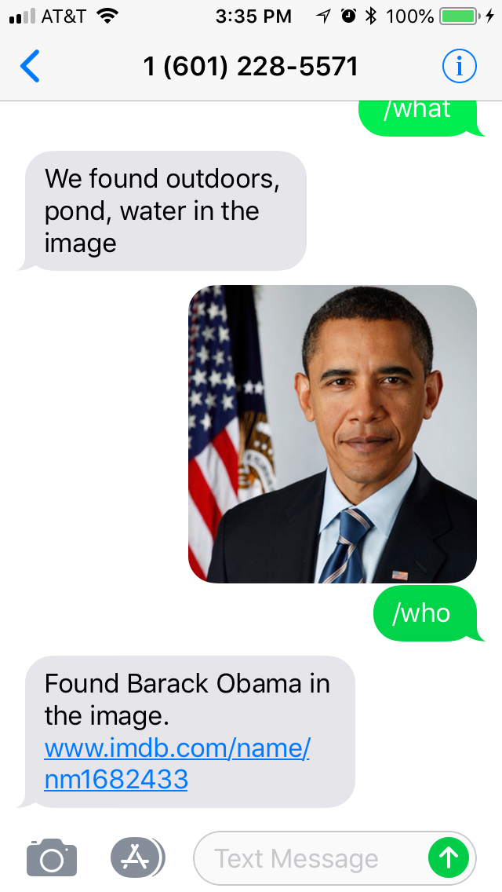
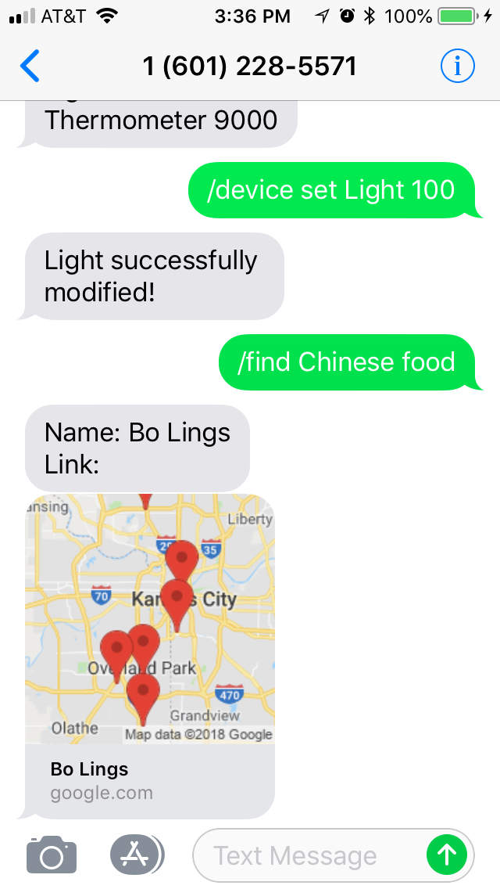
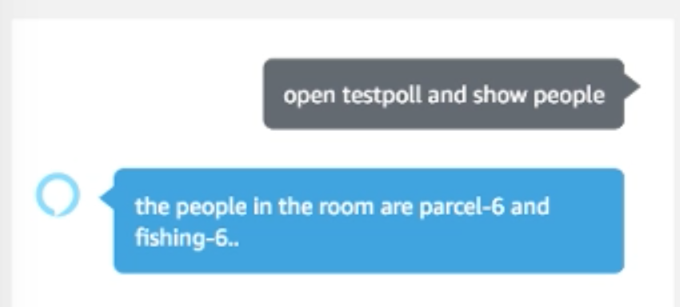

HackMidwest -- Sonder
Hack Midwest – Team Sonder
We won Sprint Prize and Cloudinary Prize.

Sonder is a proximity-based multi-purpose private network with applications in home automation, event planning and anonymous communication, enabled through text-based (SMS) virtual assistant. It allows user to anonymously interact with authorized peers.
The problem is every virtual automation assistance needs wifi to communicate with each other, we want to make a AP-less virtual automation. The main idea is to use cellular services to interact with a central hub to process information in areas such as home/office, social gatherings and hackathons. We want to communicate in a shared space with single text message authentication and ensure anonymity. In addition, we wanted a more fool-proof way to determine user proximity.
The coolest part in our hack is using the wifi probe request to get nearby device MAC address for user authentication. We have two QR codes and they help us to combine phone and MAC address. We use AWS EC2 as a backend server and DynamonDB as database to save records for each user. After user authenticated into our system, we will use Twilio API to interact with users. In our hack, we allow users to do announcements, send private message, find places of interest around us, identify people or objects in a scene or photos. We also developed an Alexa Skill to use Alexa for querying the backend database.
Wifi probe request
We used tcpdump to get all package and filter WIFI probe request in the air. Your phone will send probe request to all wifi in the area and try to connect them. The information contains your device MAC address and wifi signal power. We want to use this to authenticate people. We came up with two step idea:
- Give user a QR code and it will let user to connect a FAKE wifi. Since it is fake, no one should connect to it except the user we want to get authenticated.
- Get their MAC address and send a
createrequest to backend. The backend will save the MAC address and return an unique id. - Python code will generate a NEW QR code to let user to scan.
- This QR code will let user send a TEXT message with unique id to Twillio phone number.
- Twillio phone get this message’s sender phone number and send unique id and phone number to backend.
- Backend will find the unique id and update database record’s phone number.
In this way, we could combine MAC address and phone number.
Backend
In this project, I focused on Backend. The whole architecture is on AWS. We used EC2 instance to host Nodejs backend. Then we used DynamoDB to save data.
When the backend got request to create a new record, it will create a record with the following information:
- MAC address
- phone number(not set)
- create time
- expiration time
- unique id
- mute (false)
- info
We needed expiration time to make sure only people nearby could get service we provided. When your phone connected to a wifi, it will not always send probe request, and we did not understand its mechanism. Therefore, when new probe request got from Python, it will update expiration time and allows this phone to get connect in 5 minutes.
When a registered phone get into our area, it will send probe request to any wifi, then backend will send all registered MAC address to Python. Python will only send already registered and nearby MAC address to backend. Backend will update its expiration time.
For Twilio and other service, it will only provided for people registered, not muted and nearby.
There are some screenshots to let you know more about our service.
    
Alexa
In this project, we also tried to use Alexa skill. Because we only had 24 hour to develop, we just did a POC to prove we could get backend data from DynamoDB.

The source code could find here. GitHub